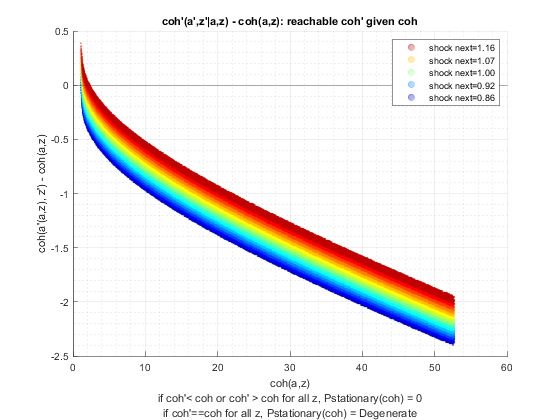
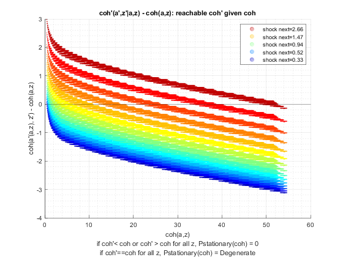
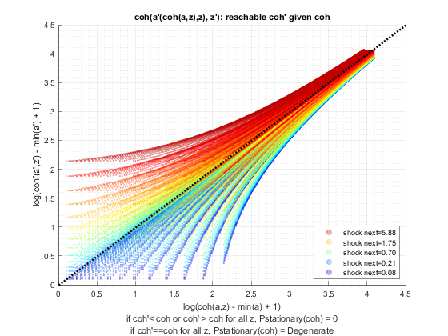
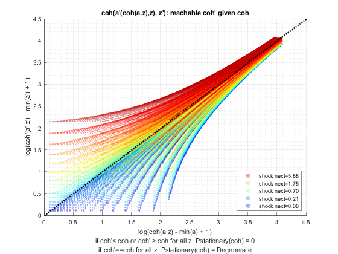

Test Shock Persistence and Variance (Savings Distribution)
back to Fan's Dynamic Assets Repository Table of Content.
Testing the ff_az_ds_vecsv program for solving the savings only dynamic programming problem.
defaults in ffs_az_set_default_param.m are:
- param_map('fl_z_rho') = 0.8;
- param_map('fl_z_sig') = 0.2;
here test three levels of persistence:
- iid shocks
- 0.50 persistence
- 0.99 persistence
for each shock, thest at these standard deviations of the log normal shock:
- 0.05
- 0.10
- 0.30
@seealso
- SPEED savings only overall benchmark speed testing: fsi_az_ds_vecsv_speed
- PREFERENCE savings only preference testing: fsi_az_ds_vecsv_pref
- PREFERENCE savings only preference testing cross: fsi_az_ds_vecsv_pref_cross
- SHOCK savings only shock testing: fsi_az_ds_vecsv_shock
- SHOCK savings only shock testing cross: fsi_az_ds_vecsv_shock_cross
- PRICE savings only wage and interest rate testing cross: adjust wage and savings rate fsi_az_ds_vecsv_price_cross
- JOINT all parameters random draws joint test fsi_az_ds_vecsv_joint_rand
Contents
Set Shared Parameters
close all; clear all; ar_fl_z_rho = [0.0, 0.50, 0.99]; ar_fl_z_sig = [0.05, 0.10, 0.3]; it_a_n = 750; it_z_n = 15;
Simulate Model with schok persistence = 0.0, IID
for fl_z_sig = ar_fl_z_sig disp('xxxxxxxxxxxxxxxxxxxxxxxxxxx'); disp('xxxxxxxxxxxxxxxxxxxxxxxxxxx'); disp(['fl_z_rho = ' num2str(ar_fl_z_rho(1))]); disp(['fl_z_sig = ' num2str(fl_z_sig)]); disp('xxxxxxxxxxxxxxxxxxxxxxxxxxx'); disp('xxxxxxxxxxxxxxxxxxxxxxxxxxx'); disp(''); disp(''); disp(''); disp(''); % Call Default Parameters <https://fanwangecon.github.io/CodeDynaAsset/m_az/paramfunc/html/ffs_az_set_default_param.html ffs_az_set_default_param> bl_input_override = true; it_param_set = 9; [param_map, support_map] = ffs_az_set_default_param(it_param_set); % Simulation Accuracy param_map('it_a_n') = it_a_n; param_map('it_z_n') = it_z_n; param_map('fl_z_rho') = ar_fl_z_rho(1); param_map('fl_z_sig') = fl_z_sig; % Display Parameters support_map('bl_display') = false; support_map('bl_display_final') = false; support_map('bl_time') = true; support_map('bl_profile') = false; support_map('bl_graph_coh_t_coh') = true; % Call Grid Generator <https://fanwangecon.github.io/CodeDynaAsset/m_az/paramfunc/html/ffs_az_get_funcgrid.html ffs_az_get_funcgrid> [armt_map, func_map] = ffs_az_get_funcgrid(param_map, support_map, bl_input_override); % Call Dynamic Programming Problem <https://fanwangecon.github.io/CodeDynaAsset/m_az/solve/html/ff_az_vf_vecsv.html ff_az_vf_vecsv> result_map = ff_az_vf_vecsv(param_map, support_map, armt_map, func_map); % Call Distribution CProgram result_map = ff_az_ds_vecsv(param_map, support_map, armt_map, func_map, result_map, bl_input_override); % Snap snapnow; end % close all close all;
xxxxxxxxxxxxxxxxxxxxxxxxxxx
xxxxxxxxxxxxxxxxxxxxxxxxxxx
fl_z_rho = 0
fl_z_sig = 0.05
xxxxxxxxxxxxxxxxxxxxxxxxxxx
xxxxxxxxxxxxxxxxxxxxxxxxxxx
Elapsed time is 2.363997 seconds.
Warning: The shifted operator is close to
singular or badly scaled. RCOND =
7.604831e-17. Consider using a different
value for sigma.
Elapsed time is 0.263913 seconds.
xxx PERCENTILES AND STATS xxx
tb_outcomes_meansdperc: mean, sd, percentiles
xxx All Variables Fraction of Y Held up to Percentile xxx
tb_outcomes_fracheld: fraction of asset/income/etc held by hh up to this percentile
xxx Variance and Covariance xxx
tb_outcomes_covvar: variance correlation
OriginalVariableNames cl_mt_pol_a cl_mt_coh cl_mt_pol_c
_____________________ ___________ __________ ___________
'mean' 0.014137 1.2945 1.2804
'sd' 0.028953 0.070889 0.053073
'coefofvar' 2.0481 0.054762 0.041452
'min' 0 1.1003 1.1003
'max' 48.064 52.735 4.6923
'pYis0' 0.79852 0 0
'pYls0' 0 0 0
'pYgr0' 0.20148 1 1
'pYisMINY' 0.79852 0.0021324 0.0021324
'pYisMAXY' 1.4635e-35 1.4377e-35 1.0351e-35
'p0_1' 0 1.1003 1.1003
'p1' 0 1.1485 1.1485
'p5' 0 1.1734 1.1734
'p10' 0 1.1988 1.1988
'p15' 0 1.2248 1.2248
'p20' 0 1.2248 1.2248
'p25' 0 1.2513 1.2513
'p35' 0 1.2672 1.2672
'p50' 0 1.2932 1.2932
'p65' 0 1.3197 1.3061
'p75' 0 1.3344 1.3197
'p80' 0.066756 1.3633 1.3344
'p85' 0.066756 1.3633 1.3344
'p90' 0.066756 1.3928 1.336
'p95' 0.066756 1.423 1.3518
'p99' 0.066756 1.4612 1.387
'p99_9' 0.13351 1.5296 1.3945
'fl_cov_cl_mt_pol_a' 0.00083829 0.0015234 0.00068508
'fl_cor_cl_mt_pol_a' 1 0.74222 0.44583
'fl_cov_cl_mt_coh' 0.0015234 0.0050252 0.0035018
'fl_cor_cl_mt_coh' 0.74222 1 0.93077
'fl_cov_cl_mt_pol_c' 0.00068508 0.0035018 0.0028168
'fl_cor_cl_mt_pol_c' 0.44583 0.93077 1
'fracByP0_1' 0 0.0018126 0.0018326
'fracByP1' 0 0.018874 0.019083
'fracByP5' 0 0.048227 0.048759
'fracByP10' 0 0.10498 0.10613
'fracByP15' 0 0.19744 0.19962
'fracByP20' 0 0.19744 0.19962
'fracByP25' 0 0.32444 0.32802
'fracByP35' 0 0.33859 0.34233
'fracByP50' 0 0.49517 0.50064
'fracByP65' 0 0.65071 0.68885
'fracByP75' 0 0.74798 0.75017
'fracByP80' 0.90431 0.84696 0.88307
'fracByP85' 0.90431 0.84696 0.88307
'fracByP90' 0.90431 0.9144 0.90744
'fracByP95' 0.90431 0.95626 0.94688
'fracByP99' 0.90431 0.98844 0.98912
'fracByP99_9' 0.99568 0.99897 0.99892
 
xxxxxxxxxxxxxxxxxxxxxxxxxxx
xxxxxxxxxxxxxxxxxxxxxxxxxxx
fl_z_rho = 0
fl_z_sig = 0.1
xxxxxxxxxxxxxxxxxxxxxxxxxxx
xxxxxxxxxxxxxxxxxxxxxxxxxxx
Elapsed time is 2.423125 seconds.
Warning: The shifted operator is close to
singular or badly scaled. RCOND =
2.686277e-17. Consider using a different
value for sigma.
Elapsed time is 0.316046 seconds.
xxx PERCENTILES AND STATS xxx
tb_outcomes_meansdperc: mean, sd, percentiles
xxx All Variables Fraction of Y Held up to Percentile xxx
tb_outcomes_fracheld: fraction of asset/income/etc held by hh up to this percentile
xxx Variance and Covariance xxx
tb_outcomes_covvar: variance correlation
OriginalVariableNames cl_mt_pol_a cl_mt_coh cl_mt_pol_c
_____________________ ___________ __________ ___________
'mean' 0.071441 1.3532 1.2818
'sd' 0.083204 0.15462 0.083202
'coefofvar' 1.1647 0.11426 0.064911
'min' 0 0.94347 0.94347
'max' 48.264 52.969 4.7048
'pYis0' 0.42104 0 0
'pYls0' 0 0 0
'pYgr0' 0.57896 1 1
'pYisMINY' 0.42104 0.0011244 0.0011244
'pYisMAXY' 1.1609e-35 1.1609e-35 1.1609e-35
'p0_1' 0 0.94347 0.94347
'p1' 0 1.0279 1.0279
'p5' 0 1.1199 1.1199
'p10' 0 1.1689 1.1689
'p15' 0 1.1883 1.1883
'p20' 0 1.2201 1.2201
'p25' 0 1.2374 1.2374
'p35' 0 1.2782 1.2735
'p50' 0.066756 1.342 1.2885
'p65' 0.066756 1.3977 1.3208
'p75' 0.13351 1.4559 1.3327
'p80' 0.13351 1.4662 1.3436
'p85' 0.13351 1.5167 1.3782
'p90' 0.20027 1.5622 1.3832
'p95' 0.26702 1.6463 1.3909
'p99' 0.33378 1.7832 1.42
'p99_9' 0.46729 1.9207 1.4566
'fl_cov_cl_mt_pol_a' 0.0069229 0.011955 0.0050316
'fl_cor_cl_mt_pol_a' 1 0.9292 0.72683
'fl_cov_cl_mt_coh' 0.011955 0.023909 0.011954
'fl_cor_cl_mt_coh' 0.9292 1 0.9292
'fl_cov_cl_mt_pol_c' 0.0050316 0.011954 0.0069226
'fl_cor_cl_mt_pol_c' 0.72683 0.9292 1
'fracByP0_1' 0 0.00078391 0.00082761
'fracByP1' 0 0.0090164 0.009519
'fracByP5' 0 0.054488 0.057524
'fracByP10' 0 0.11089 0.11707
'fracByP15' 0 0.12986 0.1371
'fracByP20' 0 0.19537 0.20626
'fracByP25' 0 0.22748 0.24016
'fracByP35' 0 0.30954 0.38858
'fracByP50' 0.26849 0.48977 0.48562
'fracByP65' 0.26849 0.62537 0.6297
'fracByP75' 0.59461 0.74168 0.74788
'fracByP80' 0.59461 0.77258 0.78951
'fracByP85' 0.59461 0.83514 0.85466
'fracByP90' 0.77871 0.87902 0.91218
'fracByP95' 0.88081 0.94188 0.96034
'fracByP99' 0.97176 0.9876 0.98868
'fracByP99_9' 0.99606 0.99862 0.99888


xxxxxxxxxxxxxxxxxxxxxxxxxxx
xxxxxxxxxxxxxxxxxxxxxxxxxxx
fl_z_rho = 0
fl_z_sig = 0.3
xxxxxxxxxxxxxxxxxxxxxxxxxxx
xxxxxxxxxxxxxxxxxxxxxxxxxxx
Elapsed time is 2.756958 seconds.
Elapsed time is 0.556488 seconds.
xxx PERCENTILES AND STATS xxx
tb_outcomes_meansdperc: mean, sd, percentiles
xxx All Variables Fraction of Y Held up to Percentile xxx
tb_outcomes_fracheld: fraction of asset/income/etc held by hh up to this percentile
xxx Variance and Covariance xxx
tb_outcomes_covvar: variance correlation
OriginalVariableNames cl_mt_pol_a cl_mt_coh cl_mt_pol_c
_____________________ ___________ __________ ___________
'mean' 0.523 1.8161 1.2931
'sd' 0.46324 0.61708 0.17147
'coefofvar' 0.88575 0.33979 0.13261
'min' 0 0.49728 0.49728
'max' 49.533 54.258 4.7257
'pYis0' 0.12428 0 0
'pYls0' 0 0 0
'pYgr0' 0.87572 1 1
'pYisMINY' 0.12428 0.00033188 0.00033188
'pYisMAXY' 6.8778e-35 6.8778e-35 6.8778e-35
'p0_1' 0 0.56551 0.56551
'p1' 0 0.73134 0.73134
'p5' 0 0.94579 0.94579
'p10' 0 1.0826 1.0826
'p15' 0.066756 1.2124 1.1456
'p20' 0.13351 1.2879 1.1564
'p25' 0.13351 1.36 1.2157
'p35' 0.26702 1.5159 1.248
'p50' 0.40053 1.7331 1.3164
'p65' 0.6008 1.9758 1.3733
'p75' 0.80107 2.1811 1.4066
'p80' 0.86782 2.3072 1.4377
'p85' 1.0013 2.4548 1.4584
'p90' 1.2016 2.6564 1.4844
'p95' 1.4019 2.962 1.5383
'p99' 2.0027 3.6034 1.6217
'p99_9' 2.6702 4.3872 1.7083
'fl_cov_cl_mt_pol_a' 0.21459 0.28299 0.068394
'fl_cor_cl_mt_pol_a' 1 0.98996 0.86103
'fl_cov_cl_mt_coh' 0.28299 0.38078 0.097796
'fl_cor_cl_mt_coh' 0.98996 1 0.92425
'fl_cov_cl_mt_pol_c' 0.068394 0.097796 0.029402
'fl_cor_cl_mt_pol_c' 0.86103 0.92425 1
'fracByP0_1' 0 0.00034388 0.00048296
'fracByP1' 0 0.0040369 0.0056697
'fracByP5' 0 0.02454 0.034466
'fracByP10' 0 0.055164 0.077476
'fracByP15' 0.0077863 0.084422 0.11957
'fracByP20' 0.025035 0.12186 0.16175
'fracByP25' 0.025035 0.15631 0.21619
'fracByP35' 0.086769 0.23533 0.30403
'fracByP50' 0.16852 0.37464 0.45539
'fracByP65' 0.3265 0.52313 0.61285
'fracByP75' 0.48887 0.63838 0.71507
'fracByP80' 0.54415 0.69823 0.76743
'fracByP85' 0.63479 0.76225 0.82589
'fracByP90' 0.74803 0.83167 0.8812
'fracByP95' 0.83586 0.90924 0.93926
'fracByP99' 0.96248 0.97858 0.98736
'fracByP99_9' 0.99461 0.99745 0.99868


Simulate Model with schok persistence = 0.5
close all for fl_z_sig = ar_fl_z_sig disp('xxxxxxxxxxxxxxxxxxxxxxxxxxx'); disp('xxxxxxxxxxxxxxxxxxxxxxxxxxx'); disp(['fl_z_rho = ' num2str(ar_fl_z_rho(2))]); disp(['fl_z_sig = ' num2str(fl_z_sig)]); disp('xxxxxxxxxxxxxxxxxxxxxxxxxxx'); disp('xxxxxxxxxxxxxxxxxxxxxxxxxxx'); disp(''); disp(''); disp(''); disp(''); % Call Default Parameters <https://fanwangecon.github.io/CodeDynaAsset/m_az/paramfunc/html/ffs_az_set_default_param.html ffs_az_set_default_param> bl_input_override = true; it_param_set = 9; [param_map, support_map] = ffs_az_set_default_param(it_param_set); % Simulation Accuracy param_map('it_a_n') = it_a_n; param_map('it_z_n') = it_z_n; param_map('fl_z_rho') = ar_fl_z_rho(2); param_map('fl_z_sig') = fl_z_sig; % Display Parameters support_map('bl_display') = false; support_map('bl_display_final') = false; support_map('bl_time') = true; support_map('bl_profile') = false; support_map('bl_graph_coh_t_coh') = true; % Call Grid Generator <https://fanwangecon.github.io/CodeDynaAsset/m_az/paramfunc/html/ffs_az_get_funcgrid.html ffs_az_get_funcgrid> [armt_map, func_map] = ffs_az_get_funcgrid(param_map, support_map, bl_input_override); % Call Dynamic Programming Problem <https://fanwangecon.github.io/CodeDynaAsset/m_az/solve/html/ff_az_vf_vecsv.html ff_az_vf_vecsv> result_map = ff_az_vf_vecsv(param_map, support_map, armt_map, func_map); % Call Distribution CProgram result_map = ff_az_ds_vecsv(param_map, support_map, armt_map, func_map, result_map, bl_input_override); % Snap snapnow; end % close all close all;
xxxxxxxxxxxxxxxxxxxxxxxxxxx
xxxxxxxxxxxxxxxxxxxxxxxxxxx
fl_z_rho = 0.5
fl_z_sig = 0.05
xxxxxxxxxxxxxxxxxxxxxxxxxxx
xxxxxxxxxxxxxxxxxxxxxxxxxxx
Elapsed time is 2.276636 seconds.
Elapsed time is 0.235062 seconds.
xxx PERCENTILES AND STATS xxx
tb_outcomes_meansdperc: mean, sd, percentiles
xxx All Variables Fraction of Y Held up to Percentile xxx
tb_outcomes_fracheld: fraction of asset/income/etc held by hh up to this percentile
xxx Variance and Covariance xxx
tb_outcomes_covvar: variance correlation
OriginalVariableNames cl_mt_pol_a cl_mt_coh cl_mt_pol_c
_____________________ ___________ ___________ ___________
'mean' 0.0040527 1.2842 1.2801
'sd' 0.017834 0.080257 0.072101
'coefofvar' 4.4005 0.062498 0.056324
'min' 0 1.0746 1.0746
'max' 48.064 52.769 4.7054
'pYis0' 0.94567 0 0
'pYls0' 0 0 0
'pYgr0' 0.05433 1 1
'pYisMINY' 0.94567 0.002686 0.002686
'pYisMAXY' -5.1228e-35 -3.0562e-35 -3.0562e-35
'p0_1' 0 1.0746 1.0746
'p1' 0 1.1291 1.1291
'p5' 0 1.1574 1.1574
'p10' 0 1.1864 1.1864
'p15' 0 1.2161 1.2161
'p20' 0 1.2161 1.2161
'p25' 0 1.2161 1.2161
'p35' 0 1.2466 1.2466
'p50' 0 1.2778 1.2778
'p65' 0 1.3099 1.3099
'p75' 0 1.3427 1.3427
'p80' 0 1.3427 1.3427
'p85' 0 1.3763 1.3763
'p90' 0 1.3763 1.3763
'p95' 0.066756 1.4111 1.4108
'p99' 0.066756 1.5132 1.4156
'p99_9' 0.13351 1.5879 1.4544
'fl_cov_cl_mt_pol_a' 0.00031805 0.00078038 0.00046234
'fl_cor_cl_mt_pol_a' 1 0.54523 0.35956
'fl_cov_cl_mt_coh' 0.00078038 0.0064412 0.0056608
'fl_cor_cl_mt_coh' 0.54523 1 0.97827
'fl_cov_cl_mt_pol_c' 0.00046234 0.0056608 0.0051985
'fl_cor_cl_mt_pol_c' 0.35956 0.97827 1
'fracByP0_1' 0 0.0022477 0.0022548
'fracByP1' 0 0.023501 0.023576
'fracByP5' 0 0.059426 0.059614
'fracByP10' 0 0.12834 0.12875
'fracByP15' 0 0.23852 0.23928
'fracByP20' 0 0.23852 0.23928
'fracByP25' 0 0.23852 0.23928
'fracByP35' 0 0.38527 0.38649
'fracByP50' 0 0.54805 0.54979
'fracByP65' 0 0.69864 0.70097
'fracByP75' 0 0.81547 0.81844
'fracByP80' 0 0.81547 0.81844
'fracByP85' 0 0.89282 0.90577
'fracByP90' 0 0.89282 0.90577
'fracByP95' 0.80207 0.94815 0.97654
'fracByP99' 0.80207 0.98824 0.99
'fracByP99_9' 0.96497 0.99912 0.99974


xxxxxxxxxxxxxxxxxxxxxxxxxxx
xxxxxxxxxxxxxxxxxxxxxxxxxxx
fl_z_rho = 0.5
fl_z_sig = 0.1
xxxxxxxxxxxxxxxxxxxxxxxxxxx
xxxxxxxxxxxxxxxxxxxxxxxxxxx
Elapsed time is 2.791007 seconds.
Warning: The shifted operator is close to
singular or badly scaled. RCOND =
2.562586e-18. Consider using a different
value for sigma.
Elapsed time is 0.309913 seconds.
xxx PERCENTILES AND STATS xxx
tb_outcomes_meansdperc: mean, sd, percentiles
xxx All Variables Fraction of Y Held up to Percentile xxx
tb_outcomes_fracheld: fraction of asset/income/etc held by hh up to this percentile
xxx Variance and Covariance xxx
tb_outcomes_covvar: variance correlation
OriginalVariableNames cl_mt_pol_a cl_mt_coh cl_mt_pol_c
_____________________ ___________ ___________ ___________
'mean' 0.072602 1.3544 1.2818
'sd' 0.11439 0.21733 0.12208
'coefofvar' 1.5755 0.16046 0.095242
'min' 0 0.89914 0.89914
'max' 48.331 53.048 4.7166
'pYis0' 0.52906 0 0
'pYls0' 0 0 0
'pYgr0' 0.47094 1 1
'pYisMINY' 0.52906 0.0024529 0.0024529
'pYisMAXY' -2.7911e-37 -2.7911e-37 -2.7911e-37
'p0_1' 0 0.89914 0.89914
'p1' 0 0.99269 0.99269
'p5' 0 1.0431 1.0431
'p10' 0 1.096 1.096
'p15' 0 1.1516 1.1516
'p20' 0 1.1644 1.1644
'p25' 0 1.21 1.21
'p35' 0 1.2714 1.2714
'p50' 0 1.3359 1.2784
'p65' 0.066756 1.4043 1.3375
'p75' 0.066756 1.4727 1.4053
'p80' 0.13351 1.5405 1.4076
'p85' 0.20027 1.5497 1.4098
'p90' 0.20027 1.6283 1.4131
'p95' 0.33378 1.755 1.4297
'p99' 0.53405 2.0201 1.5065
'p99_9' 0.73431 2.3125 1.5697
'fl_cov_cl_mt_pol_a' 0.013084 0.022707 0.0096225
'fl_cor_cl_mt_pol_a' 1 0.91339 0.68906
'fl_cov_cl_mt_coh' 0.022707 0.047234 0.024527
'fl_cor_cl_mt_coh' 0.91339 1 0.9244
'fl_cov_cl_mt_pol_c' 0.0096225 0.024527 0.014904
'fl_cor_cl_mt_pol_c' 0.68906 0.9244 1
'fracByP0_1' 0 0.0016284 0.0017206
'fracByP1' 0 0.016747 0.017696
'fracByP5' 0 0.04174 0.044104
'fracByP10' 0 0.088513 0.093527
'fracByP15' 0 0.16155 0.17071
'fracByP20' 0 0.17174 0.18151
'fracByP25' 0 0.25771 0.27316
'fracByP35' 0 0.36695 0.39683
'fracByP50' 0 0.47763 0.47199
'fracByP65' 0.21329 0.62479 0.65553
'fracByP75' 0.21329 0.7034 0.75688
'fracByP80' 0.374 0.75969 0.78252
'fracByP85' 0.5215 0.81271 0.84903
'fracByP90' 0.5215 0.87036 0.88796
'fracByP95' 0.80186 0.93342 0.94316
'fracByP99' 0.93883 0.98444 0.98827
'fracByP99_9' 0.98985 0.99834 0.99878


xxxxxxxxxxxxxxxxxxxxxxxxxxx
xxxxxxxxxxxxxxxxxxxxxxxxxxx
fl_z_rho = 0.5
fl_z_sig = 0.3
xxxxxxxxxxxxxxxxxxxxxxxxxxx
xxxxxxxxxxxxxxxxxxxxxxxxxxx
Elapsed time is 3.038182 seconds.
Elapsed time is 0.555598 seconds.
xxx PERCENTILES AND STATS xxx
tb_outcomes_meansdperc: mean, sd, percentiles
xxx All Variables Fraction of Y Held up to Percentile xxx
tb_outcomes_fracheld: fraction of asset/income/etc held by hh up to this percentile
xxx Variance and Covariance xxx
tb_outcomes_covvar: variance correlation
OriginalVariableNames cl_mt_pol_a cl_mt_coh cl_mt_pol_c
_____________________ ___________ __________ ___________
'mean' 0.92661 2.2298 1.3032
'sd' 0.95046 1.1815 0.26073
'coefofvar' 1.0257 0.52986 0.20007
'min' 0 0.42606 0.42606
'max' 49.866 54.655 4.7886
'pYis0' 0.11184 0 0
'pYls0' 0 0 0
'pYgr0' 0.88816 1 1
'pYisMINY' 0.11184 0.0010815 0.0010815
'pYisMAXY' 2.2935e-35 2.2935e-35 2.2935e-35
'p0_1' 0 0.42606 0.42606
'p1' 0 0.6311 0.6311
'p5' 0 0.83999 0.83999
'p10' 0 0.9839 0.96348
'p15' 0.066756 1.1067 1.0383
'p20' 0.13351 1.2436 1.1084
'p25' 0.20027 1.374 1.1394
'p35' 0.40053 1.6025 1.2128
'p50' 0.66756 1.9572 1.334
'p65' 1.0013 2.4277 1.4206
'p75' 1.3351 2.8342 1.4931
'p80' 1.6021 3.0846 1.5182
'p85' 1.8692 3.3941 1.5782
'p90' 2.2029 3.8234 1.6092
'p95' 2.8705 4.5448 1.6943
'p99' 4.1389 6.02 1.8658
'p99_9' 5.8745 7.9289 2.0417
'fl_cov_cl_mt_pol_a' 0.90337 1.1156 0.21226
'fl_cor_cl_mt_pol_a' 1 0.99349 0.85652
'fl_cov_cl_mt_coh' 1.1156 1.3959 0.28023
'fl_cor_cl_mt_coh' 0.99349 1 0.90973
'fl_cov_cl_mt_pol_c' 0.21226 0.28023 0.067979
'fl_cor_cl_mt_pol_c' 0.85652 0.90973 1
'fracByP0_1' 0 0.00020665 0.00035358
'fracByP1' 0 0.0024661 0.0042196
'fracByP5' 0 0.017305 0.029975
'fracByP10' 0 0.03637 0.065019
'fracByP15' 0.0045843 0.06193 0.10478
'fracByP20' 0.010543 0.090951 0.14448
'fracByP25' 0.02369 0.11642 0.19096
'fracByP35' 0.065893 0.18693 0.2768
'fracByP50' 0.14472 0.30162 0.42235
'fracByP65' 0.26542 0.45032 0.58052
'fracByP75' 0.39409 0.56581 0.69123
'fracByP80' 0.49136 0.63207 0.74959
'fracByP85' 0.57807 0.70422 0.80791
'fracByP90' 0.6749 0.78501 0.86885
'fracByP95' 0.81488 0.87863 0.93111
'fracByP99' 0.94686 0.96944 0.98531
'fracByP99_9' 0.99292 0.99615 0.9984
 
Simulate Model with schok persistence = 0.99 (very persistent)
close all for fl_z_sig = ar_fl_z_sig disp('xxxxxxxxxxxxxxxxxxxxxxxxxxx'); disp('xxxxxxxxxxxxxxxxxxxxxxxxxxx'); disp(['fl_z_rho = ' num2str(ar_fl_z_rho(3))]); disp(['fl_z_sig = ' num2str(fl_z_sig)]); disp('xxxxxxxxxxxxxxxxxxxxxxxxxxx'); disp('xxxxxxxxxxxxxxxxxxxxxxxxxxx'); disp(''); disp(''); disp(''); disp(''); % Call Default Parameters <https://fanwangecon.github.io/CodeDynaAsset/m_az/paramfunc/html/ffs_az_set_default_param.html ffs_az_set_default_param> bl_input_override = true; it_param_set = 9; [param_map, support_map] = ffs_az_set_default_param(it_param_set); % Simulation Accuracy param_map('it_a_n') = it_a_n; param_map('it_z_n') = it_z_n; param_map('fl_z_rho') = ar_fl_z_rho(3); param_map('fl_z_sig') = fl_z_sig; % Display Parameters support_map('bl_display') = false; support_map('bl_display_final') = false; support_map('bl_time') = true; support_map('bl_profile') = false; support_map('bl_graph_coh_t_coh') = true; % Call Grid Generator <https://fanwangecon.github.io/CodeDynaAsset/m_az/paramfunc/html/ffs_az_get_funcgrid.html ffs_az_get_funcgrid> [armt_map, func_map] = ffs_az_get_funcgrid(param_map, support_map, bl_input_override); % Call Dynamic Programming Problem <https://fanwangecon.github.io/CodeDynaAsset/m_az/solve/html/ff_az_vf_vecsv.html ff_az_vf_vecsv> result_map = ff_az_vf_vecsv(param_map, support_map, armt_map, func_map); % Call Distribution CProgram result_map = ff_az_ds_vecsv(param_map, support_map, armt_map, func_map, result_map, bl_input_override); % Snap snapnow; end % close all close all; clear all;
xxxxxxxxxxxxxxxxxxxxxxxxxxx
xxxxxxxxxxxxxxxxxxxxxxxxxxx
fl_z_rho = 0.99
fl_z_sig = 0.05
xxxxxxxxxxxxxxxxxxxxxxxxxxx
xxxxxxxxxxxxxxxxxxxxxxxxxxx
Elapsed time is 3.076106 seconds.
Warning: The shifted operator is close to
singular or badly scaled. RCOND =
9.874869e-17. Consider using a different
value for sigma.
Elapsed time is 0.295143 seconds.
xxx PERCENTILES AND STATS xxx
tb_outcomes_meansdperc: mean, sd, percentiles
xxx All Variables Fraction of Y Held up to Percentile xxx
tb_outcomes_fracheld: fraction of asset/income/etc held by hh up to this percentile
xxx Variance and Covariance xxx
tb_outcomes_covvar: variance correlation
OriginalVariableNames cl_mt_pol_a cl_mt_coh cl_mt_pol_c
_____________________ _______________________ _______________________ _______________________
'mean' 1.7311e-32+0i 1.2803+0i 1.2803+0i
'sd' 0-4.5431e-16i 0.55946+0i 0.55946+0i
'coefofvar' 0-2.6244e+16i 0.43697+0i 0.43697+0i
'min' 0+0i 0.40402+0i 0.40402+0i
'max' 48.264+0i 54.638+0i 6.9748+0i
'pYis0' 1+0i 0+0i 0+0i
'pYls0' 0+0i 0+0i 0+0i
'pYgr0' 6.91e-33+0i 1+0i 1+0i
'pYisMINY' 1+0i 0.0076808+0i 0.0076808+0i
'pYisMAXY' 9.4965e-37+0i -4.7938e-36+0i -4.7938e-36+0i
'p0_1' 0+0i 0.40402+0i 0.40402+0i
'p1' 0+0i 0.47029+0i 0.47029+0i
'p5' 0+0i 0.54744+0i 0.54744+0i
'p10' 0+0i 0.63725+0i 0.63725+0i
'p15' 0+0i 0.74179+0i 0.74179+0i
'p20' 0+0i 0.86348+0i 0.86348+0i
'p25' 0+0i 0.86348+0i 0.86348+0i
'p35' 0+0i 1.0051+0i 1.0051+0i
'p50' 0+0i 1.17+0i 1.17+0i
'p65' 0+0i 1.362+0i 1.362+0i
'p75' 0+0i 1.5854+0i 1.5854+0i
'p80' 0+0i 1.5854+0i 1.5854+0i
'p85' 0+0i 1.8455+0i 1.8455+0i
'p90' 0+0i 2.1482+0i 2.1482+0i
'p95' 0+0i 2.5006+0i 2.5006+0i
'p99' 0+0i 2.9108+0i 2.9108+0i
'p99_9' 0+0i 3.3883+0i 3.3883+0i
'fl_cov_cl_mt_pol_a' -2.064e-31+0i -1.5358e-31+0i 5.2823e-32+0i
'fl_cor_cl_mt_pol_a' 1+0i 0-6.0423e-16i 0+2.0783e-16i
'fl_cov_cl_mt_coh' -1.5358e-31+0i 0.31299+0i 0.31299+0i
'fl_cor_cl_mt_coh' 0-6.0423e-16i 1+0i 1+0i
'fl_cov_cl_mt_pol_c' 5.2823e-32+0i 0.31299+0i 0.31299+0i
'fl_cor_cl_mt_pol_c' 0+2.0783e-16i 1+0i 1+0i
'fracByP0_1' 0+0i 0.0024237+0i 0.0024237+0i
'fracByP1' 0+0i 0.0084997+0i 0.0084997+0i
'fracByP5' 0+0i 0.022035+0i 0.022035+0i
'fracByP10' 0+0i 0.048831+0i 0.048831+0i
'fracByP15' 0+0i 0.095974+0i 0.095974+0i
'fracByP20' 0+0i 0.16968+0i 0.16968+0i
'fracByP25' 0+0i 0.16968+0i 0.16968+0i
'fracByP35' 0+0i 0.27209+0i 0.27209+0i
'fracByP50' 0+0i 0.39854+0i 0.39854+0i
'fracByP65' 0+0i 0.5373+0i 0.5373+0i
'fracByP75' 0+0i 0.67262+0i 0.67262+0i
'fracByP80' 0+0i 0.67262+0i 0.67262+0i
'fracByP85' 0+0i 0.78991+0i 0.78991+0i
'fracByP90' 0+0i 0.88024+0i 0.88024+0i
'fracByP95' 0+0i 0.94207+0i 0.94207+0i
'fracByP99' 0+0i 0.97967+0i 0.97967+0i
'fracByP99_9' 0+0i 1+0i 1+0i


xxxxxxxxxxxxxxxxxxxxxxxxxxx
xxxxxxxxxxxxxxxxxxxxxxxxxxx
fl_z_rho = 0.99
fl_z_sig = 0.1
xxxxxxxxxxxxxxxxxxxxxxxxxxx
xxxxxxxxxxxxxxxxxxxxxxxxxxx
Elapsed time is 2.801553 seconds.
Elapsed time is 0.096894 seconds.
xxx PERCENTILES AND STATS xxx
tb_outcomes_meansdperc: mean, sd, percentiles
xxx All Variables Fraction of Y Held up to Percentile xxx
tb_outcomes_fracheld: fraction of asset/income/etc held by hh up to this percentile
xxx Variance and Covariance xxx
tb_outcomes_covvar: variance correlation
OriginalVariableNames cl_mt_pol_a cl_mt_coh cl_mt_pol_c
_____________________ ___________ __________ ___________
'mean' 0.029222 1.3106 1.2814
'sd' 0.28726 1.357 1.2002
'coefofvar' 9.8303 1.0355 0.93669
'min' 0 0.10708 0.10708
'max' 48.531 58.781 10.317
'pYis0' 0.98247 0 0
'pYls0' 0 0 0
'pYgr0' 0.017526 1 1
'pYisMINY' 0.98247 0.0076808 0.0076808
'pYisMAXY' 4.1746e-37 -3.78e-36 -3.78e-36
'p0_1' 0 0.10708 0.10708
'p1' 0 0.14509 0.14509
'p5' 0 0.19659 0.19659
'p10' 0 0.26639 0.26639
'p15' 0 0.36096 0.36096
'p20' 0 0.4891 0.4891
'p25' 0 0.4891 0.4891
'p35' 0 0.66273 0.66273
'p50' 0 0.898 0.898
'p65' 0 1.2168 1.2168
'p75' 0 1.6488 1.6488
'p80' 0 1.6488 1.6488
'p85' 0 2.2341 2.2341
'p90' 0 3.0272 3.0272
'p95' 0 4.1019 4.1019
'p99' 1.0681 7.2003 5.7283
'p99_9' 4.3391 11.842 7.5696
'fl_cov_cl_mt_pol_a' 0.082518 0.24175 0.15923
'fl_cor_cl_mt_pol_a' 1 0.62016 0.46184
'fl_cov_cl_mt_coh' 0.24175 1.8416 1.5998
'fl_cor_cl_mt_coh' 0.62016 1 0.98222
'fl_cov_cl_mt_pol_c' 0.15923 1.5998 1.4406
'fl_cor_cl_mt_pol_c' 0.46184 0.98222 1
'fracByP0_1' 0 0.00062753 0.00064184
'fracByP1' 0 0.0024587 0.0025148
'fracByP5' 0 0.0072073 0.0073717
'fracByP10' 0 0.01815 0.018564
'fracByP15' 0 0.04056 0.041485
'fracByP20' 0 0.081345 0.0832
'fracByP25' 0 0.081345 0.0832
'fracByP35' 0 0.14731 0.15067
'fracByP50' 0 0.24212 0.24764
'fracByP65' 0 0.36323 0.37151
'fracByP75' 0 0.50066 0.51208
'fracByP80' 0 0.50066 0.51208
'fracByP85' 0 0.63901 0.6536
'fracByP90' 0 0.76161 0.77904
'fracByP95' 0 0.85404 0.87382
'fracByP99' 0.11543 0.92751 0.94517
'fracByP99_9' 0.83926 0.99094 0.99436
 
 xxxxxxxxxxxxxxxxxxxxxxxxxxx
xxxxxxxxxxxxxxxxxxxxxxxxxxx
fl_z_rho = 0.99
fl_z_sig = 0.3
xxxxxxxxxxxxxxxxxxxxxxxxxxx
xxxxxxxxxxxxxxxxxxxxxxxxxxx
Elapsed time is 3.538225 seconds.
Elapsed time is 1.481364 seconds.
xxx PERCENTILES AND STATS xxx
tb_outcomes_meansdperc: mean, sd, percentiles
xxx All Variables Fraction of Y Held up to Percentile xxx
tb_outcomes_fracheld: fraction of asset/income/etc held by hh up to this percentile
xxx Variance and Covariance xxx
tb_outcomes_covvar: variance correlation
OriginalVariableNames cl_mt_pol_a cl_mt_coh cl_mt_pol_c
_____________________ ___________ __________ ___________
'mean' 6.5359 7.9807 1.4448
'sd' 12.238 16.213 5.022
'coefofvar' 1.8724 2.0315 3.476
'min' 0 0.00013575 0.00013575
'max' 50 98.487 48.487
'pYis0' -2.8202e-33 0 0
'pYls0' 0 0 0
'pYgr0' 1 1 1
'pYisMINY' -2.8202e-33 -3.052e-34 -3.052e-34
'pYisMAXY' 0.033532 0.0074934 0.0074934
'p0_1' 0.53405 0.54753 0.013487
'p1' 0.53405 0.54773 0.013689
'p5' 0.53405 0.54949 0.015441
'p10' 0.53405 0.5526 0.018552
'p15' 0.53405 0.56033 0.018552
'p20' 0.53405 0.56033 0.026289
'p25' 0.53405 0.57958 0.026289
'p35' 0.53405 0.62747 0.045539
'p50' 0.86782 1.038 0.16069
'p65' 2.6035 2.9539 0.37881
'p75' 5.2069 5.9696 0.69089
'p80' 7.8772 8.9803 1.1315
'p85' 12.75 14.5 1.6586
'p90' 22.029 25.032 2.9103
'p95' 41.989 47.762 6.3085
'p99' 50 70.237 20.237
'p99_9' 50 98.487 48.487
'fl_cov_cl_mt_pol_a' 149.77 193.7 43.931
'fl_cor_cl_mt_pol_a' 1 0.97626 0.71481
'fl_cov_cl_mt_coh' 193.7 262.85 69.152
'fl_cor_cl_mt_coh' 0.97626 1 0.84932
'fl_cov_cl_mt_pol_c' 43.931 69.152 25.22
'fl_cor_cl_mt_pol_c' 0.71481 0.84932 1
'fracByP0_1' 0.034898 0.00039353 5.3545e-05
'fracByP1' 0.034898 0.0012413 0.00017058
'fracByP5' 0.034898 0.0056335 0.00086239
'fracByP10' 0.034898 0.009841 0.0017632
'fracByP15' 0.034898 0.015571 0.0017632
'fracByP20' 0.034898 0.015571 0.0036019
'fracByP25' 0.034898 0.022491 0.0036019
'fracByP35' 0.034898 0.029744 0.0068825
'fracByP50' 0.042602 0.039778 0.016305
'fracByP65' 0.08012 0.073307 0.041913
'fracByP75' 0.1364 0.12648 0.077474
'fracByP80' 0.18497 0.17259 0.10915
'fracByP85' 0.2624 0.24438 0.15547
'fracByP90' 0.38995 0.36421 0.2337
'fracByP95' 0.62755 0.58461 0.37616
'fracByP99' 1 0.9054 0.74293
'fracByP99_9' 1 1 1